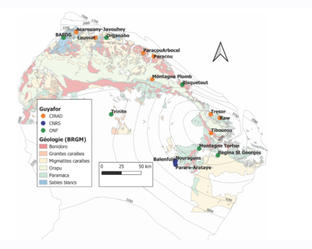
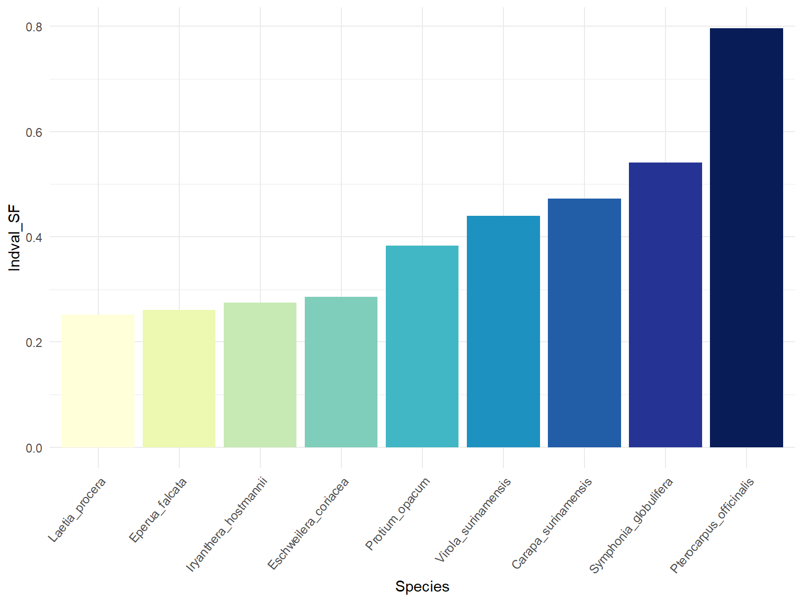
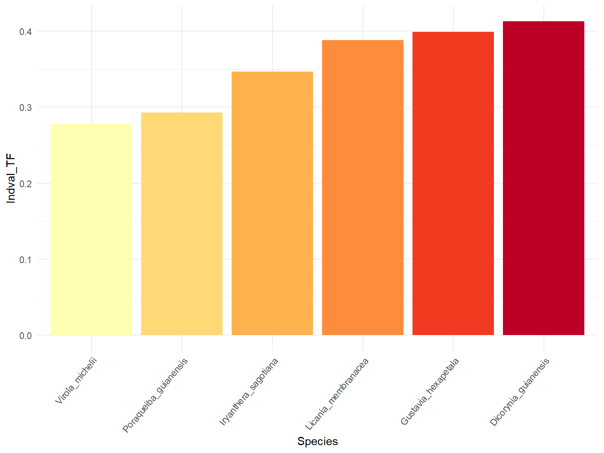
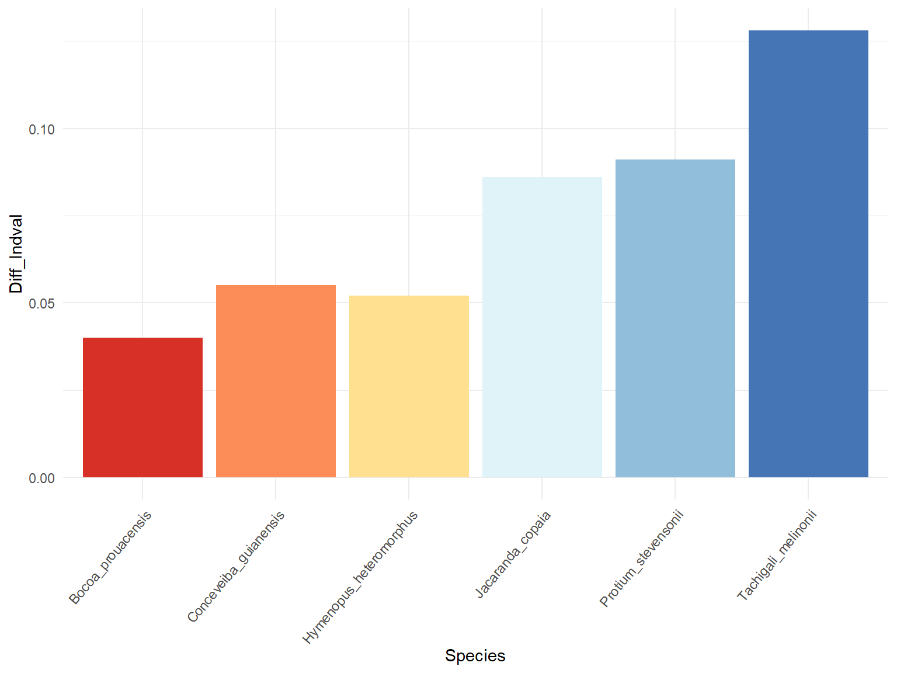

Chapter 3 Sampling
3.1 Sites
Permanent forest plots of the Guyafor network (https://paracou.cirad.fr/website/experimental-design/guyafor-network) monitor since 1970 individual tree growth and mortality in order to understand the different drivers of forest dynamics, including climate and disturbance. The network covers > 235 ha of tropical forest on 12 experimental sites. They are co-managed by the Cirad, CNRS and ONF institutes.

Guyafor stations for tropical forest monitoring
Paracou : The first site is Paracou field station (http://paracou.cirad.fr/), characterized by an average annual rainfall of 3102 mm and a mean air temperature of 25.7°C (Aguillos et al 2019). Sampling was done in six control permanent plots of 6.25 ha each with an elevation between 33-50 m (IGN-F). In total, 226 trees were sampled between 26/10/2020-7/12/2020 and 13/09/2021-17/09/2021.
Bafog: 5 permanent plots monitored of the ONF institute, characterized by an average annual rainfall of 2357 mm and a mean air temperature of 27.4°C (weather station of MétéoFrance). Sampling was done in 4-ha plots and with an elevation between 7-39 m (IGN-F). In total, 181 trees were sampled in the BAFOG site between 01/03/2021-18/03/2021.
Est: The third site is the Kaw area characterized by an average annual rainfall of 3851 mm and a mean air temperature of 26.3°C (weather station of MétéoFrance). The area groups several plots (see Table. S3) with an elevation between 7-250 m (IGN-F). In total, 145 trees were sampled between 05/10/2021-20/10/2021.
The three sites were chosen in order to sample species along the rainfall gradient.
 ## Habitats
## Habitats
The tropical forest of the Guianan Shield is characterized by heterogeneous meso-topographic conditions with numerous small hills, distinguishing two main contrasting habitats, terra firme (TF) forests and seasonally flooded forests (SF) (Ferry et al. 2010).
Terra firme covers 77 % of French Guiana. They are also called plateau and are higher areas characterized by a high clay content (47 %, Baraloto et al. 2021) and have a high water drainage.
Seasonally flooded habitats are located in the valleys, with a maximum slope of 1% and are characterized by relatively more fertile soils compared to terra firme forests (Baraloto et al. 2011). These soils are sandy (65%, Baraloto et al. 2021) and interestingly richer in phosphorus (Ferry et al. 2010; Baraloto et al. 2021). In SF forest, Tthe water table is never observed to descend below 60 cm depth, remaining at the soil surface for at least two consecutive months each year (Baraloto et al. 2007; Ferry et al. 2010) during the rainy season. The classification for waterlogged habitat may be loose and not as precise as for the terra firme, but it does not impact the sampling. in natura, we assess if the tree is really in a waterlogged habitat or not.
How do we define seasonally flooded soils? On maps, pixels located at an altitude difference of less than 2 m from the altitude of the nearest surface run-off of the same catchment area. Pixels situés à moins de 2m de dénivelé du plus proche écoulement de surface appartenant au même bassin versant. Surface run-off corresponds to pixels receiving the waterflow of at least 75 pixels upstream. Everything is being calculated from the SRTM 30 m (after adjusting the basin area with fillings.)
Gaelle information:
- utilisation couche sig onf
- critere pente (inf 20° = BF, pente moins forte espece de lissage avec bc d’arbres en BF, durcissement des criteres, affiner et bien tomber dans du BF) comment: SRTM pente 20° à 30m ne correspond pas n’ont plus à la pente sur le terrain, il y a une imprecision. but again in natura we make sure the tree is really in the corresponding habitat.
- distance à la crique (inf 50m) (marginale)
Soil nutrient availability is another important driver of species distribution and plant community assembly in these forests (Quesada et al. 2012; Baldeck et al. 2013; Oliveira et al. 2019; Fortunel et al. 2020; Baraloto et al. 2021). The pre-Cambrian rocks of the Guiana Shield have been exposed to weathering and erosion for over 2 billion years, which has produced highly and therefore originate overall nutrient-poor soils (Flores et al. 2020; Grau et al. 2017; Soong et al. 2020). TF soils are richer in organic matter than SF, while SF soils havewhich distinguishes itself with a higher phosphorus content (Ferry et al. 2010).
The habitat classification of the tree species are based on all the past project achieved and mostly on HABITAT ONF project.

Topographic variables are strong proxies for soil hydrology, which correlates with a combination of physico-chemical properties. A new hydrological index that accounts for both variations in climate and soil / topography across sites by combining the concept of MCWD with the one of Relative Extractable Water (e.g. Wagner et al. 2011) or Plant Available Water capacity (Nepstad et al. 2004, Ouédraogo et al. 2016). For Paracou, there is the topography classification established by Allié, Pélissier et al., 2015. Sylvain: The topographic wetness index (𝑇𝑊𝐼), identifies water accumulation areas. TWI was derived from 185 a 1-m resolution digital elevation model built based on data from a LiDAR campaign done in 186 2015 using SAGA-GIS (Conrad et al. 2015).
3.2 Species
Specialist species are species that have a habitat preference, either for terra firme soils or for seasonally flooded soils in French Guiana.
Generalist species are here defined as species able to thrive in the two contrasting habitats, they are regionally widespread and abundant species.
Indicator Species Analysis
We explored the degree of habitat preference using Indicator Species Analysis (Dufrene & Legendre 1997). It takes account of both relative abundance and relative frequencies of each species across the two main habitats in French Guiana, seasonally flooded forest and Terra firme forests.
Habitat preferences were determined based on (Baraloto et al. 2021) study. The Dufrene and Legendre method (Dufrêne and Legendre 1997) was used as a measure of habitat association for each species in each habitat, while taking into account spatial auto-correlation with the MSR method (Wagner and Dray 2015). This measure, named IndVal for Indicator value, scales from 0 to 1 and integrates both the relative frequency of each species across plots in a given habitat and its relative abundance in each habitat. Out of the 654 species identified from (Baraloto et al. 2021), we only considered the 5 % highest Indval values in each habitat to qualify them as specialists of a habitat. This corresponded to a threshold of IndValSF specialist ≥ 0.200 for SF specialists and IndValTF specialist ≥ 0.259 for TF specialists. Those with an equal or lower IndVal in both habitats were considered without any habitat preference and therefore called generalists.
Species with high IndVals means that the species prefers the habitat (but not exclusive, hence the word preference), but are also a high probability of being sampled in the given habitat.
We also wanted to maximize the phylogeny to get a greater picture, having specialists and generalists in the main clades: (Rosids, Asterids, Magnoliids). This would allow us to assess whether the different strategies to drought tolerance can be extend to the species of the same clade.
We thus studied 21 tropical tree species, which included 6 generalist species, 9 SF specialist species, and 6 TF specialist species.
## [1] "Taxonomic classification not consistent between sp.list and tree."
## genus family_in_sp.list family_in_tree
## 33 Chaetocarpus Peraceae Euphorbiaceae
## 41 Cordia Cordiaceae Boraginaceae
## [1] "Note: 2 taxa fail to be binded to the tree,"
## [1] "Indet.Indet._Indet." "Indet.Indet._sp.3Guyafor"



More details about IndVal :
IndVal used by other projects (ex. INSERER BIBLIO TerSteege et al 2013). The relative abundance and the relative frequency must be combined by multiplication because they represent independent information about the species distribution. X100 for a percentage. The index is max when all individuals of a species are found in a single group of sites or when the species occurs in all sites of that group. The statistical significance of the species indicator values is evaluated using a randominization procedure. Significance of habitat association was estimated by a Monte Carlo procedure that reassigns species densities and frequencies to habitats 1000 times. It therefore gives an ecological meaning as it compares the typologies.
Other indicators :
- Contrary to TWINSPAN, this indicator index for a given species is independent of other species relative abundances and there is no need for pseudospecies
- Species richness (sensitive to several factors)
- Oliviera species association to the topographic and edaphic gradient : weighted the HAND or P concentration of the plot by the abundance of the species in the plot. Divided by the number of individuals of the species in all plots.
3.3 Individuals
The individuals were selected with a DBH value between the 10th and the 90th percentile of the species’ distribution pattern, in order to have a sampling that best reflects the forest structure. In this percentile interval, species were randomly selected for sampling.
Total individuals collected for the paper.
| Family | Genus | Species | Paracou | Bafog | Kaw | Total |
|---|---|---|---|---|---|---|
| Fabaceae | Bocoa | prouacensis | 15 | 10 | 3 | 56 |
| Meliaceae | Carapa | surinamensis | 10 | 1 | 0 | 22 |
| Euphorbiaceae | Conceveiba | guianensis | 20 | 16 | 0 | 72 |
| Fabaceae | Dicorynia | guianensis | 6 | 6 | 0 | 24 |
| Fabaceae | Eperua | falcata | 10 | 0 | 10 | 40 |
| Lecythidaceae | Eschweilera | coriacea | 10 | 10 | 0 | 40 |
| Lecythidaceae | Gustavia | hexapetala | 5 | 9 | 5 | 38 |
| Chrysobalanaceae | Hymenopus | heteromorphus | 22 | 14 | 8 | 88 |
| Myristicaceae | Iryanthera | hostmannii | 9 | 10 | 10 | 58 |
| Myristicaceae | Iryanthera | sagotiana | 5 | 5 | 9 | 38 |
| Bignoniaceae | Jacaranda | copaia subsp. copaia | 20 | 13 | 15 | 96 |
| Salicacea | Laetia | procera | 9 | 10 | 10 | 58 |
| Chrysobalanaceae | Licania | membranacea | 5 | 4 | 5 | 28 |
| Metteniusaceae | Poraqueiba | guianensis | 11 | 10 | 10 | 62 |
| Burseraceae | Protium | opacum subsp. rabelianum | 10 | 0 | 11 | 42 |
| Burseraceae | Protium | stevensonii | 12 | 12 | 1 | 50 |
| Fabaceae | Pterocarpus | officinalis | 10 | 10 | 10 | 60 |
| Clusiaceae | Symphonia | globulifera | 10 | 9 | 10 | 58 |
| Fabaceae | Tachigali | melinonii | 16 | 15 | 13 | 88 |
| Myristicaceae | Virola | michelii | 5 | 7 | 6 | 36 |
| Myristicaceae | Virola | surinamensis | 6 | 10 | 9 | 50 |
| Total |
|
|
226 | 181 | 145 | 1104 |
3.4 Sampling strategy
- Maps were produced by QGIS software
- Field protocol
- Fill the fieldworksheet Fieldworksheet
- Assess tree and branch height
- Assess tree and branch Dawkins :